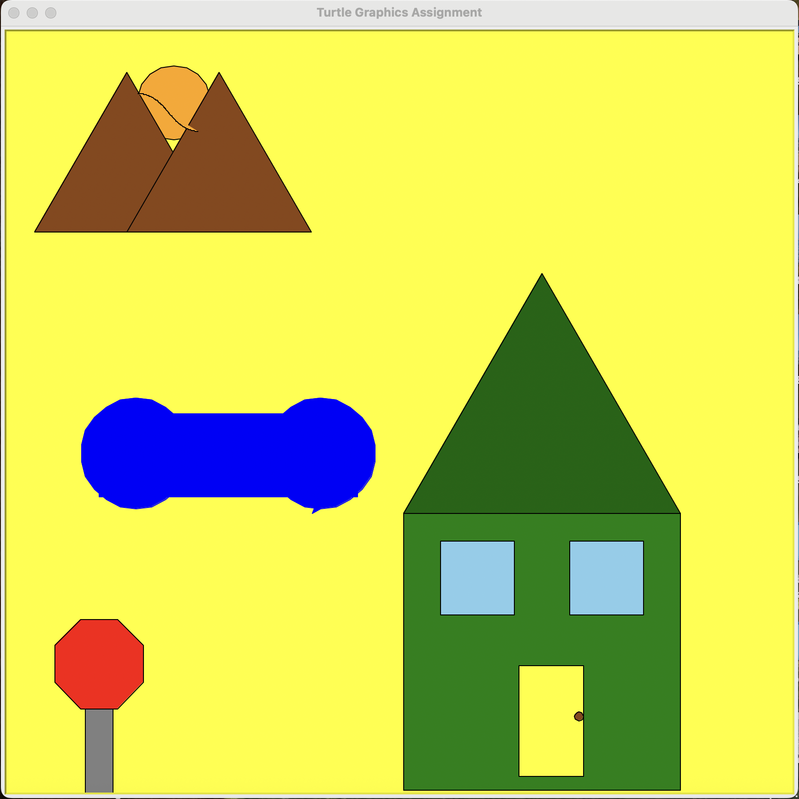

About the Project
This project is about creating a complete graphical scene using Python’s Turtle graphics module. The code builds the scene out of smaller drawing functions that position and combine shapes into a larger picture. Each function controls details like color, size, and placement so that different parts of the scene can be reused or adjusted without rewriting everything. Overall, the program demonstrates structured problem-solving by organizing the artwork into clear, readable pieces of code.
Sample Code
The following sample shows how one of the drawing functions uses parameters, loops, and helper functions to create a composite shape in the scene:
def draw_flower(t, x, y, petal_color, center_color):
"""Draw a flower at (x, y) with colored petals and a colored center."""
# Move to starting position without drawing
jump_to(t, x, y)
t.pencolor(petal_color)
t.fillcolor(petal_color)
# Draw petal ring
for _ in range(8):
draw_circle(t, 10) # basic circle helper
t.left(45) # rotate for the next petal
# Draw flower center
jump_to(t, x, y)
t.pencolor(center_color)
t.fillcolor(center_color)
draw_circle(t, 6)
In this sample, the draw_flower function takes the turtle object and several parameters
that control where the flower is drawn and what colors it uses. The code first jumps to the starting
position without leaving a line, so the flower can be placed anywhere in the scene. It then uses a
for loop and a fixed rotation to draw a ring of circles, which together look like petals.
After the petals are drawn, the turtle returns to the center and draws a smaller circle in a different
color to represent the middle of the flower. This approach makes it easy to reuse the same function
to create many flowers with different positions and color combinations.
Final Scene
Below is the final turtle graphics scene produced by my program:
The final picture shows a complete turtle graphics scene composed of multiple shapes arranged into a cohesive design. Different elements are drawn using separate functions, which are layered to create depth and variety in the image. Colors, positions, and sizes are carefully chosen so the whole scene feels balanced and visually interesting. Together, they demonstrate how simple geometric drawing commands can be combined to build a detailed and expressive graphic.